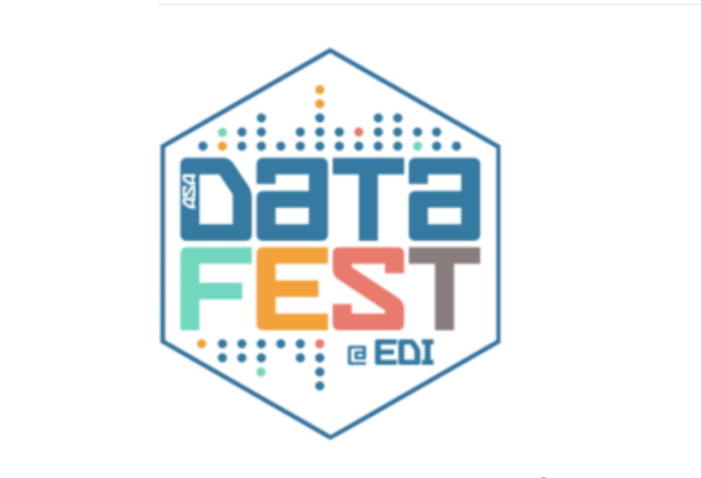
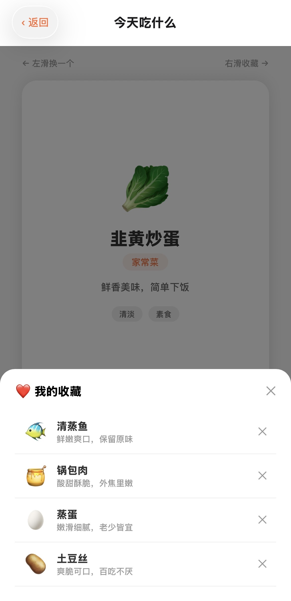
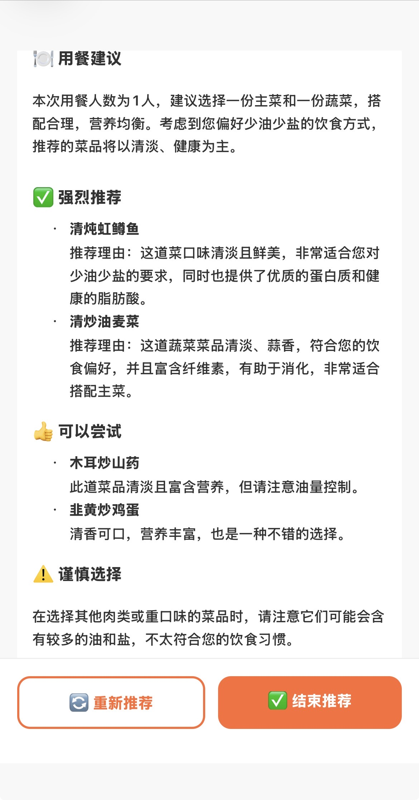

曹之洲
Zhizhou Cao
Joy

学历背景 Academic Background
GPA：4.3 / 5.0
主修课程：机器学习，深度学习，大数据分析
研究生数学学院学生大使 GPA: 4.3 / 5.0
Coursework: Machine Learning, Deep Learning, Big Data Analysis
Student Ambassador of the Graduate School of Mathematics
荣誉学士学位
主修课程：统计方法论、计算数学、应用统计学、数据科学设计与抽样
奖项：爱丁堡奖，美国统计协会(ASA)数据竞赛最佳数据可视化奖
Honors Bachelor's Degree
Coursework: Statistical Methodology, Computational Mathematics, Applied Statistics, Data Science Design and Sampling
Awards: Edinburgh Award, ASA Data Visualization Competition Best Data Visualization Award
我做过的 What I've built


期待与你沟通Let's connect
正在寻找AI产品方向的机会，欢迎聊聊～ Looking for AI PM internship opportunities. Feel free to reach out!
项目背景Overview
多人聚餐时，组织者需要在点菜前逐一确认每个人的饮食禁忌和口味偏好，过程繁琐且容易遗漏。现有的大众点评、美团等工具只解决"去哪吃"的问题，没有解决"这道菜我能不能吃、合不合适"的问题。主要对于经常组织多人聚餐的人，尤其是聚餐发起者。他们的核心诉求是在不熟悉菜单的陌生餐厅，快速筛选出所有人都能吃、且符合各自口味的菜品。
解决方案的核心逻辑是把"人的偏好"和"菜单信息"两个数据源交给 AI 做匹配，输出兼顾所有人需求的推荐结果。
When organizing group meals, organizers need to confirm each person's dietary restrictions and taste preferences one by one before ordering, which is time-consuming. Existing tools like Dineout and Meituan only solve the problem of "where to eat," not "whether I can eat this dish and whether it suits me."
The main users are people who often organize group meals, especially the initiators. Their core requirement is to quickly filter out dishes that everyone can eat and match everyone's preferences in unfamiliar restaurants without knowing the menu. The core solution is to match two data sources: personal preferences and menu information, then output recommendations that cover the needs of the whole group.
技术架构Tech Framework
前端：使用 React Native + Expo 开发，一套代码同时支持 iOS 手机端和网页端。路由使用 Expo Router 的文件路由系统，本地数据存储使用 AsyncStorage，图片选择使用 expo-image-picker。
AI 后端：使用 Dify 平台搭建工作流，不是直接调用大模型 API，而是通过可视化工作流编排实现完整的推理链路。工作流内部分两个 LLM 节点：第一个节点使用通义千问VL（视觉语言模型）识别菜单图片，提取所有菜品名称列表；第二个节点使用 GPT-4o-mini 接收菜品列表和所有人的偏好信息，进行匹配分析并生成结构化的推荐结果。
数据流向：App 本地 → 读取本人偏好和已选好友的完整偏好信息 → 拼接成结构化文字 → 连同菜单图片一起发送给 Dify API → Dify 工作流处理 → 返回 Markdown 格式的推荐结果 → App 渲染展示。
Frontend: Developed with React Native + Expo, supporting both iOS mobile and web platforms with a single codebase. The routing system uses Expo Router, local data storage uses AsyncStorage, and image selection uses expo-image-picker.
AI backend: Built on the Dify platform through a visual workflow instead of directly calling a single LLM endpoint. The workflow includes two model nodes: the first uses Tongyi Qianwen VL to recognize menu images and extract dish names; the second uses GPT-4o-mini to match dish options with group preferences and generate structured recommendations.
Data flow: App local storage -> read self and selected friends' preferences -> build structured prompt text -> send with menu image to Dify API -> Dify workflow processing -> return Markdown recommendations -> render in app.
产品架构Product Framework
模块一：我的偏好。用户第一次进入 App 时设置自己的固定偏好，数据保存在本地，之后每次点餐自动带入，不需要重复填写。收集的信息包括：口味偏好（清淡/微辣/中辣/重辣）、饮食类型（无限制/素食/清真/低卡减脂）、过敏食材（海鲜/花生/坚果/乳制品）、不喜欢的食材（文字输入）、其他备注（文字输入）。
模块二：点餐。核心功能分两个入口：其一是「我要去餐厅吃」，流程为上传菜单图片、选择用餐人数与同桌偏好、点击开始推荐并查看分级结果；其二是「不知道吃什么」，在选择人数与同桌偏好后进入卡片滑动推荐页，支持收藏和管理候选菜品。
模块三：好友档案。支持添加、编辑、删除常用好友的饮食偏好，结构与本人偏好一致，点餐时可直接勾选调用，避免重复输入。
Module 1: Personal preference profile. Users set persistent preferences on first use, including taste level, diet type, allergens, disliked ingredients, and notes. These are saved locally and reused automatically.
Module 2: Ordering flow. The core feature has two entries: "I am going to a restaurant" (upload menu, select diners, run recommendation) and "I don't know what to eat" (swipe-based recommendations filtered by constraints, with favorites management).
Module 3: Friend profiles. Users can add, edit, and delete common dining partners' preferences and directly select them during recommendation, reducing repeated input.


视频演示Video Demo
局限与未来Limitations & Future
当前局限：菜单识别依赖图片清晰度，模糊或光线不好的图片识别准确率会下降。本地菜品数据库是手动维护的静态文件，覆盖有限。随机推荐模块未接入 AI，仅做禁忌过滤。用户数据保存在本地，换设备会丢失。
近期可迭代方向：接入地图/点评类开放 API，实现周边餐厅推荐并自动获取菜单；扩充本地菜品数据库；让随机推荐也接入 AI 做口味匹配，而不只做禁忌过滤。
长期方向：支持好友偏好档案共享与自动同步，增加历史点餐记录，持续优化个人偏好模型。
Current limitations: Menu recognition quality depends on image clarity. The local dish database is manually maintained and limited in coverage. The random recommendation flow does not use AI matching yet and only filters hard constraints. User data is local-only and is not synced across devices.
Near-term iterations: Integrate map/review platform APIs for nearby restaurant discovery and auto menu acquisition, expand dish coverage, and add AI preference matching to the random recommendation path.
Long-term direction: Enable shared friend preference profiles with auto-sync, add historical ordering records, and continuously refine personalization models.
项目概述Project Overview
这是我们参加数据分析竞赛的核心项目，合作方为在线统计学习平台 CourseKata。项目聚焦在线教育平台的关键命题：如何评估教学资源的真实有效性，并将数据洞察转化为可执行的产品优化动作。
我担任四人团队负责主导选题、分析路线和成果汇报。我们的研究问题是：教学视频是否能显著提升学生章节测验成绩。最终我们在 20 支队伍中获得“最佳可视化奖”，并向合作方提交了可落地的改进建议。
This project was completed in a data analytics competition with CourseKata, an online statistics learning platform. We focused on a core EdTech question: how to evaluate the real effectiveness of learning resources and turn insights into product decisions.
As Team Lead of a four-person team, I led scoping, analysis design, and final delivery. Our key question was whether instructional videos significantly improve chapter quiz performance. We won the Best Visualization Award among 20 teams and delivered actionable recommendations to CourseKata.
技术架构与分析方法Technical Approach
1) 数据探索与预处理：样本覆盖 1 万+ 学生学习记录。我先完成 EDA、缺失处理与变量定义，将“观看视频”严格定义为“视频完成度超过 80%”，并按章节规整学习行为。
2) 核心统计建模：最大挑战是选择偏见（主动学生更可能看视频且成绩更高）。
为剥离混淆因素，我们使用多元线性回归：
- 因变量：章节测验成绩
- 核心自变量：是否观看视频（1/0）
- 控制变量：上一章节成绩、章节学习总时长、人口统计信息（如年级）、等等
结果显示核心变量 p 值显著大于 0.05，无法拒绝“视频观看对成绩无显著影响”的原假设。即在现有模式下，视频对成绩提升没有可测量的显著作用。
1) EDA and Pre-processing: We analyzed learning histories from 10,000+ students, cleaned missing values, and normalized records by chapter. “Video watched” was defined as completion rate above 80%.
2) Statistical Modeling: To address selection bias, we used multiple linear regression with quiz score as dependent variable, video-watching status as the key independent variable, and controls including prior chapter score, total study time, and demographics.
The video coefficient was not significant (p > 0.05), indicating no measurable score lift from videos under the current product setup.
可视化洞察与关键发现Visual Insights & Findings
“视频无显著增益”这一零假设（H0 Null Hypothesis）的被拒绝，让我们将重点从“证明价值”转向“诊断原因”。基于可视化分析，我们验证了三点：
假设一：观看方式问题。大量学生呈现“任务驱动式拖拽”，只在卡题时快速定位答案片段，而非线性学习。
假设二：内容时长问题。超过 10 分钟的视频完成率明显下降，观看兴趣随时长增加断崖式下跌。
假设三：人群异质性。视频对基础较弱学生有微弱正向作用，但对中等及以上学生几乎无效果。
The null result shifted our focus from value validation to root-cause diagnosis. Visual analysis supported three hypotheses:
H1: Viewing behavior issue. Many learners used videos in a task-driven, seek-and-skip pattern rather than systematic learning.
H2: Content length issue. Completion rates dropped sharply for videos longer than 10 minutes.
H3: Segment heterogeneity. Videos showed weak positive effects for low-performing students, but little impact for mid/high performers.
项目成果与展望Outcome & Future
尽管结论出乎预料，但成果被认为具备战略价值：我们挑战了核心假设，帮助平台避免资源错配风险。很多时候，“发现什么无效”比“发现什么有效”更有决策价值。
三个可执行建议：
1) 从“鼓励观看”转向“优化学习体验”
2) 推行 3-5 分钟聚焦单知识点的“微课视频”
3) 在关键节点内嵌互动问答，推动被动观看转为主动学习
展望：本次观察性研究已完成“问题诊断”，下一步应通过 A/B 测试验证“互动式微视频”是否能显著提升学习成绩。
Although the result was out of expectation, it was strategically valuable: we challenged a core assumption and reduced the risk of resource misallocation.
Actionable recommendations: (1) shift from “increasing views” to “improving learning experience,” (2) redesign long videos into 3-5 minute micro-lessons, and (3) add in-video interactive checkpoints to convert passive watching into active learning.
Future: This observational study diagnosed the problem well; the next step is rigorous A/B testing to validate whether interactive micro-videos can produce measurable score improvements.
项目概述Project Overview
该项目聚焦工业日志场景下的单类异常检测任务，数据规模约 25 万条，具备高维特征、混合数据类型以及类别极度不平衡等典型挑战。
项目目标是在保证低误报的前提下提升异常识别精度，并建立可解释、可迁移的检测方法论，支持后续线上风控与监控策略迭代。
This project focused on one-class anomaly detection on industrial log data (about 250k records), with high dimensionality, mixed feature types, and extreme class imbalance.
The goal was to maximize precision under low false-positive constraints and build a practical, transferable detection methodology for production monitoring and risk control.
技术方案与验证Approach & Validation
四模型集成：构建并融合 RFOD、PCA、孤立森林与基于规则的检测器，兼顾统计稳健性、结构降维能力、树模型隔离能力与业务先验约束。
关键方法论：提出“目标-上下文分离”原则，将核心异常目标特征与噪声时序上下文解耦，避免基于重构的模型被高噪声时序特征主导，提升检测稳定性。
评估策略：在高度不平衡场景下使用平均精度（AP）作为核心指标，而非 ROC-AUC，确保评估结果更贴近真实业务中“抓到异常”的能力。
Four-model ensemble: Integrated RFOD, PCA-based detector, Isolation Forest, and rule-based detection to combine statistical robustness, dimensional structure signals, isolation capability, and domain priors.
Key principle: Introduced a "target-context separation" design to decouple core anomaly features from noisy temporal context, preventing reconstruction-based methods from being dominated by noise-heavy sequence features.
Evaluation: Used Average Precision (AP), instead of ROC-AUC, as the primary metric to better reflect anomaly-capture quality under extreme class imbalance.
结果与反思Results & Reflection
最终方案在高精准异常识别上取得了稳定结果，验证了多模型协同与评估口径选择对不平衡检测任务的决定性影响。
项目沉淀了可复用经验：第一，异常检测必须先定义业务目标与数据特征；第二，评估指标要与场景匹配；第三，面对混合日志数据时，规则与学习模型结合往往比单一模型更可靠。
The final system achieved consistently high-precision anomaly detection, confirming the value of model complementarity and metric selection in imbalanced settings.
Key takeaways: define business objectives and false-positive cost first, align metrics with scenario constraints, and combine rule logic with learned detectors for mixed log data rather than relying on a single model.